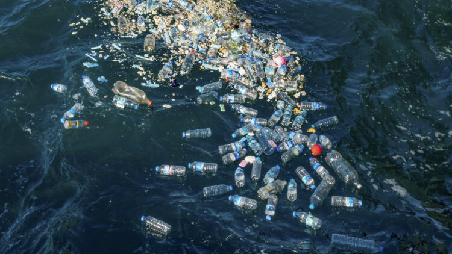
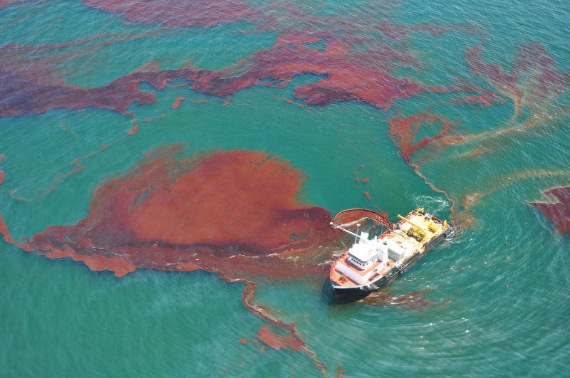

What’s happening with the ocean?
The Ocean Covers more then 70% of our world.There are 5.25 trillion pieces of plastic debris in the ocean.
Of that mass, 269,000 tons float on the surface, while some four billion plastic microfibers per square kilometer litter the deep sea.And the people there see you differently, too.

Plastic waste is one of the leading causes of ocean pollution. Every week, hundreds of thousands of pieces of plastic are dumped into the ocean. Plastic water bottles, plastic straws, and plastic grocery bags, which are given out at most grocery stores to store your purchases, are examples of this. Every year, at least 14 million tons of plastic end up in the ocean. Many sea animals are adversely affected by the plastic that is being dumped into the ocean, and some tragically die as a result of the plastic.
Plastic Waste

Other than plastic, oil is a major contributor to ocean population growth. Knowing how frequently oil spills occur near and in the marine ecosystem, the water in the ocean becomes dirtier by the day. Animals that live in the ocean are also negatively impacted, as they have reproduction problems as well as other disabilities and health issues.